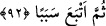
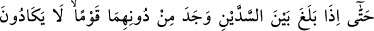
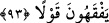
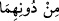

Memleketi zevâlsiz emri altına alır
Hakikî İskender, mülkü zâil olmayan, onunla ilgili şeyleri ancak Allah’ın bildiği
kimsedir. O ise zâhirini itâat, ubûdiyet ahkâmı ve muâmeleleri ile; bâtınını ise
müşâhede nurları, rubûbiyyet tecellîleri ile kuvvetlendiren kimsedir. İşte bu durumda
nefs-i emmâre ölür, kalb kalesine hâkim olan zâlim el kırılır; çokluğundan dolayı
bilinemeyen, ancak Allah’ın bildiği ordular gâlib gelir.
Allah’ım, bizi melekût nurlarıyla ve lâhûtî kuvvetlerle müeyyed kılınanlardan eyle!
Çünkü sen dilediğini yapmaya kâdirsin.
92. Sonra yine bir yol tuttu.
“Sonra yine” doğu-batı arası güneyden kuzeye doğru üçüncü “bir yol tuttu.”
93. Nihâyet iki dağ arasına ulaştığında onların önünde, hemen hiçbir sözü
anlamayan bir kavim buldu.
“Nihâyet iki dağ” yâni aralarında sed bulunan iki dağ “arasına ulaştığında onların
önünde” o seddin önünde ve arkasında “hemen hiçbir sözü anlamayan bir kavim
buldu.” Ne onlar insanlardan birinin sözünü anlıyorlar, ne de insanlar onların
konuşmalarını anlıyorlardı. Çünkü dilleri tamamen yabancıydı.
Bunlar, Türk diyarından doğuya doğru, arkalarında Ye’cûc ve Me’cûc’ûn bulunduğu
iki yüksek dağdır. “
es-Sedd” dağ ve engel anlamındadır. Ya da “
es-Sedd”
insanların yaptığı, “
es-südd” ise Allah’ın yarattığı dağ ve benzeri şeylerdir.
“
(onların önünde)” ifâdesi Celâleyn Tefsîri’nde “onların yanında” diye tefsir
edilmiştir.
Zemahşerî, “hemen hiçbir sözü anlamayan” cümlesini şöyle tefsir eder: “Onlar,
anadan doğma dilsizin anladığı gibi çok zor ve meşakkatle, ancak işaret ve benzeri
hareketlerle anlıyorlardı. Bunlar Türklerdi.
Tarihçiler derler ki: Nuh (a.s.)’ın Sam, Hâm ve Yafes adında üç oğlu vardı. Sam
Arab, Acem ve Rumların babasıdır. Ham, Habeş, Zenci ve Nûbe’nin babasıdır. Yafes,
Türk, Hazer, Sekâlibe, Ye’cûc ve Me’cûc’ün babasıdır.
Envâru’l-meşârık’ta da şöyle der: “Türklerin aslı, Kantûra oğullarıdır. Kantûrâ,
İbrahim (a.s.)’ın câriyesiydi. Ona birçok evlad doğurdu. Türkler de onlardan çoğalıp